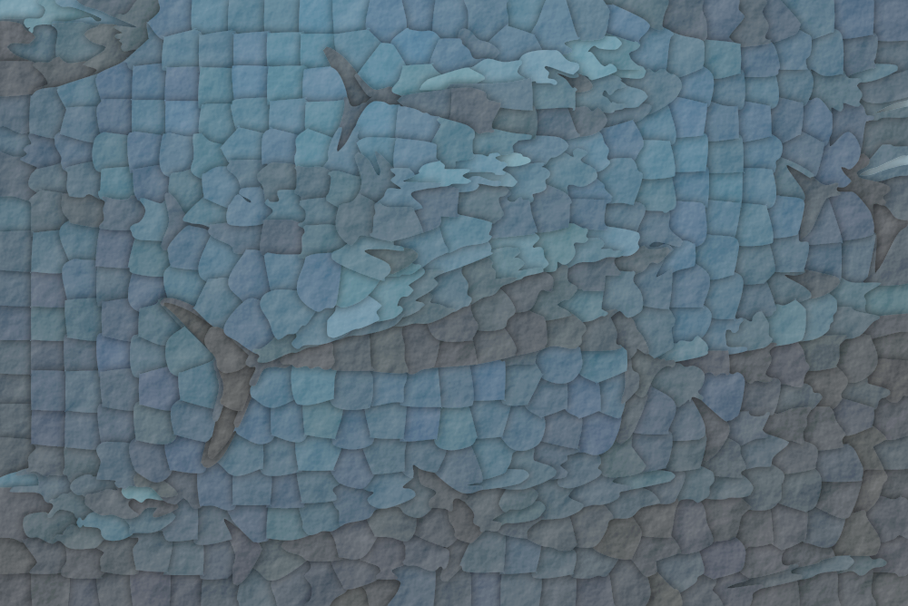

Graphics
I write Python code to generate these graphics, sometimes based on existing photos. I made a package called algoraphics for this process.


To create these maps, I download a region of OpenStreetMap data, assign rendering styles to each type of feature (e.g. house, road, forest), and use Python scripts to render the maps in SVG. You can create maps like these using a web app I created at oddmaps.org.